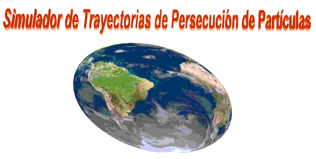

Iluminacion
es necesario iluminar la escena para ver los componentes.
"STPP" proveé 3 tipos de Iluminación
Direccional
solo se permite una luz direccional por escena y la direccion de la luz puede ser definida
Dispersa y Puntual
cuando un punto tiene un color especificado aparecera en la escena
para indicar la posicion de la luz. esta esfera puede ser reposicionada con el mouse
como cualquier otro objeto. La esfera no aparecera en la escena final .
